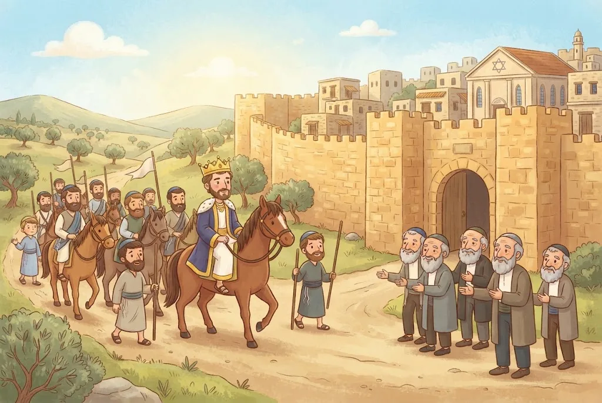

⛰️אֱלוּל – יְמֵי רָצוֹן
אַחֲרֵי חֵטְא הָעֵגֶל עָלָה מֹשֶׁה רַבֵּנוּ לְהַר סִינַי בְּרֹאשׁ חֹדֶשׁ אֱלוּל, לְבַקֵּשׁ סְלִיחָה וְרַחֲמִים עַל יִשְׂרָאֵל. בְּיוֹם הַכִּפּוּרִים קִבֵּל ה׳ אֶת תְּשׁוּבָתָם, וּמֹשֶׁה יָרַד עִם הַלּוּחוֹת הַשְּׁנִיִּים.
לָכֵן אַרְבָּעִים הַיָּמִים שֶׁמִּתְּחִלַּת אֱלוּל וְעַד יוֹם הַכִּפּוּרִים הֵם הַיָּמִים הַמְּסֻגָּלִים בְּיוֹתֵר לִתְשׁוּבָה.
💛 אַהֲבַת הַשֵּׁם: גַּם אַחֲרֵי חֵטְא גָּדוֹל, ה׳ לֹא עָזַב אֶת בָּנָיו. חֹדֶשׁ אֱלוּל מְלַמֵּד אוֹתָנוּ שֶׁהַדֶּלֶת שֶׁל אָבִינוּ שֶׁבַּשָּׁמַיִם תָּמִיד פְּתוּחָה.
🎺שׁוֹפָר בְּחֹדֶשׁ אֱלוּל
כְּשֶׁעָלָה מֹשֶׁה לָהָר, הֶעֱבִירוּ שׁוֹפָר בְּכָל הַמַּחֲנֶה, שֶׁלֹּא יִטְעוּ שׁוּב. לָכֵן תִּקְּנוּ חֲכָמִים לִתְקֹעַ בַּשּׁוֹפָר בֶּאֱלוּל, כִּי קוֹלוֹ מְעוֹרֵר לִתְשׁוּבָה. מִנְהַג הָאַשְׁכְּנַזִּים: תּוֹקְעִים בְּכָל יוֹם בְּסוֹף תְּפִלַּת שַׁחֲרִית. מִנְהַג הַסְּפָרַדִּים: תּוֹקְעִים בַּסְּלִיחוֹת, בַּקַּדִּישׁ שֶׁבְּסוֹפָן, וְרַבִּים גַּם בְּי״ג מִדּוֹת.
זוֹ אֵינָהּ חוֹבָה. יָחִיד שֶׁלֹּא שָׁמַע שׁוֹפָר בֶּאֱלוּל – אֵינוֹ צָרִיךְ לְחַפֵּשׂ מִי שֶׁיִּתְקַע לוֹ.
💛 אַהֲבַת הַשֵּׁם: קוֹל הַשּׁוֹפָר הוּא כְּמוֹ קְרִיאָה שֶׁל אַבָּא: ״בֵּן יָקָר, בּוֹא הַבַּיְתָה!״ הוּא מְעוֹרֵר אֶת הַלֵּב לַחֲזֹר אֶל ה׳.
🔀שְׁנֵי מִנְהָגִים – וּשְׁנֵיהֶם כַּהֲלָכָה
סְלִיחוֹת: הַסְּפָרַדִּים אוֹמְרִים בְּכָל חֹדֶשׁ אֱלוּל, וְהָאַשְׁכְּנַזִּים מַתְחִילִים בְּמוֹצָאֵי הַשַּׁבָּת שֶׁלִּפְנֵי רֹאשׁ הַשָּׁנָה. שׁוֹפָר בֶּאֱלוּל: הָאַשְׁכְּנַזִּים תּוֹקְעִים בְּסוֹף שַׁחֲרִית, וְהַסְּפָרַדִּים – בַּסְּלִיחוֹת. וְעוֹד מַחֲלֹקֶת: מִי שֶׁאוֹמֵר סְלִיחוֹת אַחֲרֵי עֲלוֹת הַשַּׁחַר – יֵשׁ סוֹבְרִים שֶׁיְּדַלֵּג עַל ״קַמְנוּ בְּאַשְׁמֹרֶת״, וְהַמִּנְהָג לְאָמְרוֹ.
עֲמִידָה בַּסְּלִיחוֹת: הָאַשְׁכְּנַזִּים עוֹמְדִים בְּכָל הַסְּלִיחוֹת, וְהַסְּפָרַדִּים אוֹמְרִים חֵלֶק בִּישִׁיבָה וְחֵלֶק בַּעֲמִידָה.
💛 אַהֲבַת הַשֵּׁם: כָּל הַמִּנְהָגִים נוֹסְדוּ עַל יְדֵי גְּדוֹלֵי יִשְׂרָאֵל. כָּל אֶחָד שׁוֹמֵר בְּאַהֲבָה עַל מִנְהַג אֲבוֹתָיו, וְכֻלָּנוּ מִתְעוֹרְרִים יַחַד לִתְשׁוּבָה.
📜עַל מָה מִתְפַּלְּלִים בַּסְּלִיחוֹת
לַסְּלִיחוֹת אֵין נֻסָּח אֶחָד, אֲבָל יֵשׁ מִסְגֶּרֶת מְשֻׁתֶּפֶת לְכָל הָעֵדוֹת: פּוֹתְחִים בְּ״אַשְׁרֵי״ וַחֲצִי קַדִּישׁ, אוֹמְרִים פְּסוּקֵי תַּחֲנוּנִים, י״ג מִדּוֹת וְוִדּוּי, ״עֲנֵנוּ״ וּנְפִילַת אַפַּיִם, וְחוֹתְמִים בְּקַדִּישׁ.
בַּסְּלִיחוֹת מִתְפַּלְּלִים לֹא רַק עַל עַצְמֵנוּ, אֶלָּא עַל כָּל עַם יִשְׂרָאֵל: עַל קִבּוּץ הַגָּלֻיּוֹת, עַל בִּנְיַן יְרוּשָׁלַיִם וְעַל בֵּית הַמִּקְדָּשׁ.
💛 אַהֲבַת הַשֵּׁם: מִי שֶׁמִּתְפַּלֵּל עַל כָּל הָעָם – דַּוְקָא מִתּוֹךְ כָּךְ גַּם הַתְּפִלּוֹת הָאִישִׁיּוֹת שֶׁלּוֹ מִתְקַבְּלוֹת.
🌙מָתַי מַתְחִילִים סְלִיחוֹת?
מִנְהַג הַסְּפָרַדִּים: אוֹמְרִים סְלִיחוֹת בְּכָל חֹדֶשׁ אֱלוּל וּבַעֲשֶׂרֶת יְמֵי תְּשׁוּבָה, אֲבָל בְּיוֹם רֹאשׁ חֹדֶשׁ אֱלוּל עַצְמוֹ אֵין אוֹמְרִים. מִנְהַג הָאַשְׁכְּנַזִּים: מַתְחִילִים בְּמוֹצָאֵי הַשַּׁבָּת שֶׁלִּפְנֵי רֹאשׁ הַשָּׁנָה, וּבִתְנַאי שֶׁיִּהְיוּ לְפָחוֹת אַרְבָּעָה יְמֵי סְלִיחוֹת.
לָכֵן אִם רֹאשׁ הַשָּׁנָה חָל בְּיוֹם שֵׁנִי אוֹ שְׁלִישִׁי – הָאַשְׁכְּנַזִּים מַתְחִילִים בְּמוֹצָאֵי הַשַּׁבָּת שֶׁלִּפְנֵי כֵן.
💛 אַהֲבַת הַשֵּׁם: שְׁנֵי הַמִּנְהָגִים כְּשֵׁרִים. וְכָכָל שֶׁמִּתְקָרְבִים לְרֹאשׁ הַשָּׁנָה, רַבִּים יוֹתֵר מִשְׁתַּדְּלִים לָקוּם – כִּי מִתְקָרְבִים אֶל הַמֶּלֶךְ.
⏰זְמַן הַסְּלִיחוֹת
הַזְּמַן הַטּוֹב בְּיוֹתֵר לִסְלִיחוֹת הוּא בְּ״אַשְׁמֹרֶת הַבֹּקֶר״ – לִקְרַאת סוֹף הַלַּיְלָה. אָז הָעוֹלָם שָׁקֵט, וְהַתְּפִלָּה יוֹצֵאת מֵעֹמֶק הַלֵּב. כְּבָר מֵחֲצוֹת הַלַּיְלָה הַזְּמַן מַתְאִים. הַיּוֹם רַבִּים קָמִים לִסְלִיחוֹת כַּחֲצִי שָׁעָה אוֹ שָׁעָה לִפְנֵי שַׁחֲרִית.
מִי שֶׁהַקִּימָה הַמֻּקְדֶּמֶת תַּעֲשֶׂה אוֹתוֹ עָיֵף כָּל כָּךְ שֶׁלֹּא יוּכַל לַעֲבֹד אוֹ לִלְמֹד כָּרָאוּי – עָדִיף שֶׁלֹּא יָקוּם, וְיֹאמַר בִּמְקוֹם זֶה פִּרְקֵי תְּהִלִּים.
💛 אַהֲבַת הַשֵּׁם: ה׳ רוֹצֶה תְּפִלָּה מִן הַלֵּב, וְלֹא תְּפִלָּה שֶׁמְּקַלְקֶלֶת אֶת שְׁאָר הַיּוֹם. גַּם הַזְּהִירוּת לִשְׁמֹר עַל הַכֹּחַ הִיא עֲבוֹדַת ה׳.
📖גַּם הַלּוֹמְדִים קָמִים
גַּם תַּלְמִיד חָכָם שֶׁשּׁוֹקֵד עַל לִמּוּדוֹ רָאוּי שֶׁיַּקְדִּישׁ זְמַן לִסְלִיחוֹת, וְכָךְ נוֹהֲגִים בְּכָל הַיְּשִׁיבוֹת. רַק מִי שֶׁהַקִּימָה הַמֻּקְדֶּמֶת תִּגְרֹם לוֹ לְהַפְסִיד הַרְבֵּה יוֹתֵר לִמּוּד מִזְּמַן הַסְּלִיחוֹת – מוּטָב שֶׁלֹּא יָקוּם.
יֵשׁ פִּיּוּטִים שֶׁאוֹמְרִים בָּהֶם ״קַמְנוּ בְּאַשְׁמֹרֶת״. יֵשׁ אוֹמְרִים שֶׁמִּי שֶׁאוֹמֵר סְלִיחוֹת אַחֲרֵי עֲלוֹת הַשַּׁחַר יְדַלֵּג עֲלֵיהֶם, אֲבָל הַמִּנְהָג לְאָמְרָם – כִּי הַנֻּסָּח נִתְקַן לְכָל יִשְׂרָאֵל, וְתָמִיד יֵשׁ יְהוּדִים שֶׁקָּמִים בְּאַשְׁמֹרֶת.
💛 אַהֲבַת הַשֵּׁם: אֲנַחְנוּ עַם אֶחָד. כְּשֶׁאֲנִי אוֹמֵר ״קַמְנוּ״, אֲנִי מִצְטָרֵף לְכָל הַיְּהוּדִים שֶׁקָּמִים לְהִתְפַּלֵּל.
👥סְלִיחוֹת בְּמִנְיָן
אוֹמְרִים סְלִיחוֹת בְּמִנְיָן, כִּי י״ג מִדּוֹת רַחֲמִים הֵן ״דָּבָר שֶׁבִּקְדֻשָּׁה״. מִי שֶׁאוֹמֵר סְלִיחוֹת לְבַד – מְדַלֵּג עַל י״ג מִדּוֹת, אוֹ קוֹרֵא אוֹתָן בְּטַעֲמֵי הַמִּקְרָא, כְּמוֹ שֶׁקּוֹרְאִים בַּתּוֹרָה.
זְקֵנִים, חַלָּשִׁים וְחוֹלִים שֶׁקָּשֶׁה לָהֶם לַעֲמֹד – רַשָּׁאִים לָשֶׁבֶת בְּמֶשֶׁךְ כָּל הַסְּלִיחוֹת. מִי שֶׁקָּשֶׁה לוֹ מְעַט – יִשְׁתַּדֵּל לַעֲמֹד לְפָחוֹת בַּוִּדּוּי, בְּי״ג מִדּוֹת וּכְשֶׁפּוֹתְחִים אֶת הָאָרוֹן.
💛 אַהֲבַת הַשֵּׁם: בְּמִנְיָן כָּל יִשְׂרָאֵל עוֹמְדִים יַחַד לִפְנֵי ה׳. כְּשֶׁמִּתְפַּלְּלִים יַחַד, הַתְּפִלָּה שֶׁל כָּל אֶחָד מִתְקַבֶּלֶת יוֹתֵר.
🧍עוֹמְדִים אוֹ יוֹשְׁבִים
מִנְהַג הָאַשְׁכְּנַזִּים – לוֹמַר אֶת כָּל הַסְּלִיחוֹת בַּעֲמִידָה. מִנְהַג הַסְּפָרַדִּים – חֵלֶק בִּישִׁיבָה וְחֵלֶק בַּעֲמִידָה. וּמִנְהַג הַתֵּימָנִים – רֹב הַסְּלִיחוֹת בִּישִׁיבָה.
יָחִיד שֶׁאֵין לוֹ מִנְיָן יָכוֹל לוֹמַר סְלִיחוֹת לְבַד, וּמְדַלֵּג עַל י״ג מִדּוֹת אוֹ קוֹרֵא אוֹתָן בְּטַעֲמֵי הַמִּקְרָא.
💛 אַהֲבַת הַשֵּׁם: כָּל עֵדָה שׁוֹמֶרֶת עַל דַּרְכָּהּ, וְכֻלָּן עוֹמְדוֹת יַחַד לִפְנֵי אוֹתוֹ אָב רַחֲמָן.
✨י״ג מִדּוֹת רַחֲמִים
אַחֲרֵי שֶׁמָּחַל ה׳ עַל חֵטְא הָעֵגֶל, הוּא גִּלָּה לְמֹשֶׁה אֶת מִדּוֹתָיו: ״ה׳ ה׳ אֵל רַחוּם וְחַנּוּן, אֶרֶךְ אַפַּיִם וְרַב חֶסֶד וֶאֱמֶת...״. חֲכָמִים אָמְרוּ שֶׁה׳ הֶרְאָה לְמֹשֶׁה סֵדֶר תְּפִלָּה, וְאָמַר: ״כָּל זְמַן שֶׁיִּשְׂרָאֵל חוֹטְאִים – יַעֲשׂוּ לְפָנַי כַּסֵּדֶר הַזֶּה, וַאֲנִי מוֹחֵל לָהֶם״.
הַקֶּשֶׁר בֵּין ה׳ לְיִשְׂרָאֵל נִצְחִי. שׁוּם חֵטְא לֹא מְבַטֵּל אוֹתוֹ, וְלָכֵן תָּמִיד אֶפְשָׁר לַחֲזֹר בִּתְשׁוּבָה.
💛 אַהֲבַת הַשֵּׁם: כְּשֶׁאוֹמְרִים י״ג מִדּוֹת, נִזְכָּרִים כַּמָּה ה׳ רַחוּם – וּמִתְחַבְּרִים אֵלָיו מֵחָדָשׁ.
🍞תַּעֲנִית וּצְדָקָה
בִּימֵי הָרִאשׁוֹנִים רֹב יִשְׂרָאֵל צָמוּ בְּעֶרֶב רֹאשׁ הַשָּׁנָה. הַיּוֹם רֹב יִשְׂרָאֵל אֵינָם צָמִים, וּמְעַטִּים מְהַדְּרִים לָצוּם עַד חֲצוֹת הַיּוֹם. גַּם הֵם לֹא צָמִים עַד הָעֶרֶב, כְּדֵי לֹא לְהִכָּנֵס לֶחָג כְּשֶׁהֵם מְעֻנִּים.
מִי שֶׁרוֹצֶה לְקַיֵּם אֶת הַמִּנְהָג וְהַצּוֹם קָשֶׁה לוֹ – טוֹב שֶׁיִּפְדֶּה אֶת הַתַּעֲנִית בִּצְדָקָה.
💛 אַהֲבַת הַשֵּׁם: גְּדוֹלֵי הַחֲסִידוּת לִמְּדוּ שֶׁבַּדּוֹרוֹת שֶׁלָּנוּ עִקַּר הָעֲבוֹדָה הִיא בְּשִׂמְחָה. ה׳ אוֹהֵב עֲבוֹדָה מִתּוֹךְ שִׂמְחָה וְלֵב טוֹב.
👑מְשַׁל הַמֶּלֶךְ וְהַמַּס
מְדִינָה הָיְתָה חַיֶּבֶת מַס גָּדוֹל לַמֶּלֶךְ. כְּשֶׁהַמֶּלֶךְ בָּא, יָצְאוּ לִקְרָאתוֹ גְּדוֹלֵי הַמְּדִינָה – וְהוּא וִתֵּר לָהֶם עַל שְׁלִישׁ. אַחַר כָּךְ יָצְאוּ הַבֵּינוֹנִיִּים – וְוִתֵּר עַל עוֹד שְׁלִישׁ. וּכְשֶׁיָּצְאוּ כֻּלָּם, גְּדוֹלִים וּקְטַנִּים – וִתֵּר עַל הַכֹּל.
הַנִּמְשָׁל: בְּעֶרֶב רֹאשׁ הַשָּׁנָה גְּדוֹלֵי הַדּוֹר מִתְעַנִּים, בַּעֲשֶׂרֶת יְמֵי תְּשׁוּבָה – יְחִידִים, וּבְיוֹם הַכִּפּוּרִים כָּל יִשְׂרָאֵל מִתְעַנִּים, וְה׳ מוֹחֵל לָהֶם עַל הַכֹּל.
💛 אַהֲבַת הַשֵּׁם: כְּשֶׁכָּל הָעָם עוֹמֵד יַחַד, גְּדוֹלִים וּקְטַנִּים, הַמֶּלֶךְ מְרַחֵם יוֹתֵר מִכֹּל. גַּם הַיְּלָדִים הֵם חֵלֶק חָשׁוּב מִן הָעָם הַזֶּה.

🧹עֶרֶב רֹאשׁ הַשָּׁנָה
בְּעֶרֶב רֹאשׁ הַשָּׁנָה מִתְכּוֹנְנִים לֶחָג כְּמוֹ לְשַׁבָּת: מְנַקִּים אֶת הַבַּיִת, מְכַבְּסִים בְּגָדִים, מִתְרַחֲצִים, מְכִינִים מַאֲכָלִים טוֹבִים וְעוֹרְכִים אֶת הַשֻּׁלְחָן. מִי שֶׁצָּרִיךְ לְהִסְתַּפֵּר – מִסְתַּפֵּר לִכְבוֹד הֶחָג.
בְּעֶרֶב רֹאשׁ הַשָּׁנָה לֹא תּוֹקְעִים בַּשּׁוֹפָר, כְּדֵי לְהַבְדִּיל בֵּין תְּקִיעוֹת אֱלוּל לִתְקִיעוֹת הַחוֹבָה. מִי שֶׁרוֹצֶה לְהִתְאַמֵּן – תּוֹקֵעַ בְּחֶדֶר סָגוּר.
💛 אַהֲבַת הַשֵּׁם: הַהֲכָנָה מְלַמֶּדֶת אוֹתָנוּ לְכַבֵּד אֶת הַיּוֹם הַקָּדוֹשׁ. כְּשֶׁמְּחַכִּים לָאוֹרֵחַ הֲכִי חָשׁוּב, מְסַדְּרִים הַכֹּל יָפֶה.
🕍הַחַזָּן בַּיָּמִים הַנּוֹרָאִים
בַּיָּמִים הַנּוֹרָאִים מַקְפִּידִים שֶׁהַחַזָּן יִהְיֶה הָגוּן, עָנָו וְאָהוּב עַל הַצִּבּוּר, יוֹדֵעַ אֶת הַתְּפִלָּה הֵיטֵב, וְשֶׁיָּשִׁיר לְשֵׁם שָׁמַיִם וְלֹא כְּדֵי לְהִתְגָּאוֹת בְּקוֹלוֹ. רָאוּי שֶׁיִּהְיֶה נָשׂוּי וּבֶן שְׁלֹשִׁים לְפָחוֹת.
אִם בָּחֲרוּ חַזָּן שֶׁאֵינוֹ מַתְאִים – לֹא מְעוֹרְרִים מַחֲלֹקֶת. גַּם בַּיָּמִים הַנּוֹרָאִים כָּל אֶחָד מִתְפַּלֵּל לְעַצְמוֹ מִתּוֹךְ הַמַּחֲזוֹר.
💛 אַהֲבַת הַשֵּׁם: חַזָּן שֶׁמְּנַעֵים אֶת הַתְּפִלָּה כְּדֵי לְעוֹרֵר אֶת הַצִּבּוּר – שְׂכָרוֹ גָּדוֹל מְאוֹד. הַקּוֹל הַיָּפֶה הוּא כְּלִי לְכַבֵּד אֶת ה׳.
🤫עֲמִידָה בְּלַחַשׁ
הָיוּ שֶׁנָּהֲגוּ לְהִתְפַּלֵּל עֲמִידָה בְּקוֹל בַּיָּמִים הַנּוֹרָאִים, כְּדֵי לְכַוֵּן. אֲבָל טוֹב יוֹתֵר לְהִתְפַּלֵּל בְּלַחַשׁ, וּבְמָקוֹם שֶׁכֻּלָּם מִתְפַּלְּלִים בְּלַחַשׁ – אָסוּר לְהִתְפַּלֵּל בְּקוֹל, כִּי זֶה מַפְרִיעַ לְכַוָּנַת הַמִּתְפַּלְּלִים.
כְּשֶׁפּוֹתְחִים אֶת אֲרוֹן הַקֹּדֶשׁ נוֹהֲגִים לַעֲמֹד. זְקֵנִים וַחֲלָשִׁים רַשָּׁאִים לָשֶׁבֶת, וְיִתְאַמְּצוּ לַעֲמֹד כְּשֶׁמּוֹלִיכִים אֶת סֵפֶר הַתּוֹרָה.
💛 אַהֲבַת הַשֵּׁם: הַתְּפִלָּה הֲכִי עֲמֻקָּה הִיא שִׂיחָה שְׁקֵטָה בֵּינִי לְבֵין ה׳ – וְהִיא גַּם שׁוֹמֶרֶת עַל הַכַּוָּנָה שֶׁל הָאֲחֵרִים.
🧠 בְּדֹק אֶת עַצְמְךָ
יוֹסֵף מִמִּשְׁפָּחָה סְפָרַדִּית. מָתַי אוֹמְרִים אֶצְלָם סְלִיחוֹת?
💡 בְּסוֹף תְּקוּפַת הָרִאשׁוֹנִים נִתְקַבֵּל אֵצֶל הַסְּפָרַדִּים לוֹמַר סְלִיחוֹת בְּכָל אֱלוּל וּבַעֲשֶׂרֶת יְמֵי תְּשׁוּבָה. בְּיוֹם רֹאשׁ חֹדֶשׁ אֱלוּל עַצְמוֹ אֵין אוֹמְרִים. בִּימֵי הַגְּאוֹנִים אָמְרוּ רַק בַּעֲשֶׂרֶת יְמֵי תְּשׁוּבָה.
דָּנִי מִמִּשְׁפָּחָה אַשְׁכְּנַזִּית. הַשָּׁנָה רֹאשׁ הַשָּׁנָה חָל בְּיוֹם שֵׁנִי. מָתַי מַתְחִילִים סְלִיחוֹת?
💡 הָאַשְׁכְּנַזִּים מַתְחִילִים בְּמוֹצָאֵי שַׁבָּת, וּבִתְנַאי שֶׁיִּהְיוּ לְפָחוֹת אַרְבָּעָה יְמֵי סְלִיחוֹת. כְּשֶׁרֹאשׁ הַשָּׁנָה בְּיוֹם שֵׁנִי, בַּשַּׁבָּת הַסְּמוּכָה יִהְיוּ רַק יוֹמַיִם – וְלָכֵן מַתְחִילִים שָׁבוּעַ קֹדֶם.
דָּנִי אוֹמֵר סְלִיחוֹת לְבַד, בְּלִי מִנְיָן. מָה יַעֲשֶׂה כְּשֶׁיַּגִּיעַ לְי״ג מִדּוֹת?
💡 י״ג מִדּוֹת הֵן דָּבָר שֶׁבִּקְדֻשָּׁה, וְרַק בְּמִנְיָן אוֹמְרִים אוֹתָן כִּתְפִלָּה. יָחִיד מְדַלֵּג עֲלֵיהֶן, אוֹ קוֹרֵא אוֹתָן בְּטַעֲמִים כְּמִי שֶׁקּוֹרֵא בַּתּוֹרָה. אֶת שְׁאָר הַסְּלִיחוֹת הוּא אוֹמֵר.
📚 עוֹד חָמְרֵי לִמּוּד עַל הֲלָכָה – חִנָּם, בַּמַּאֲגָר הַקּוֹל הַחֲמִישִׁי:
kol-toda.co.il/halacha
הַמַּאֲגָר הַמָּלֵא: kol-toda.co.il
הַמַּאֲגָר הַמָּלֵא: kol-toda.co.il